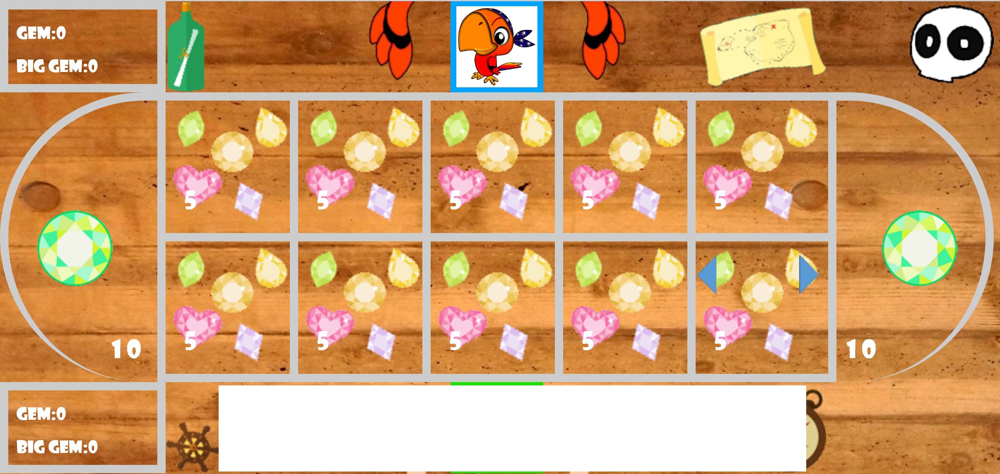
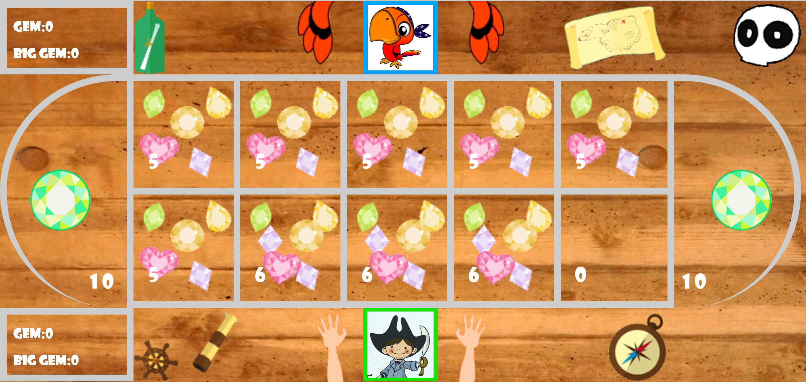
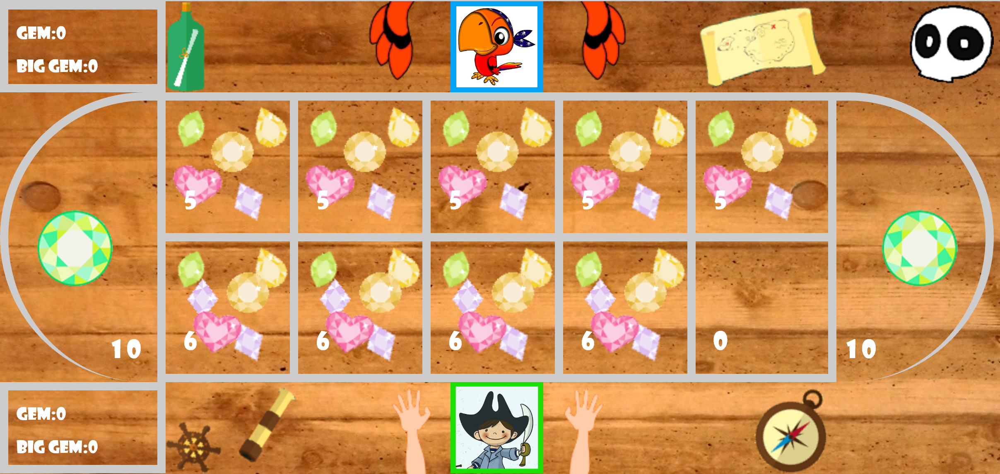
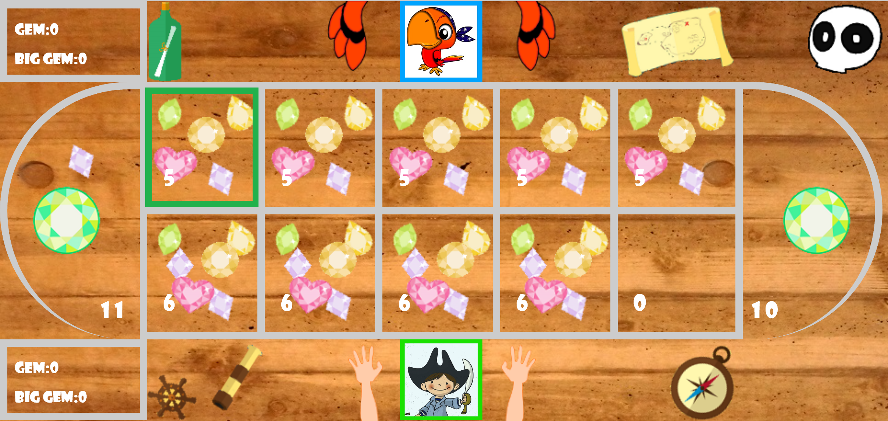
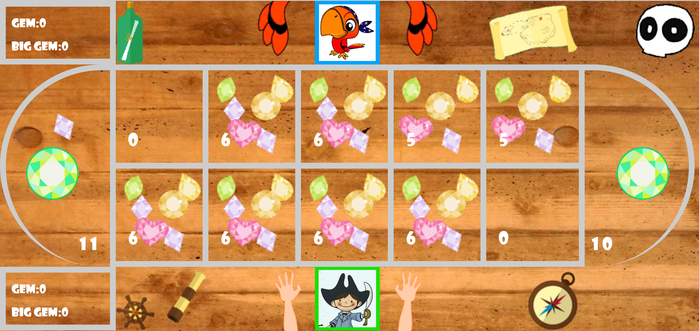
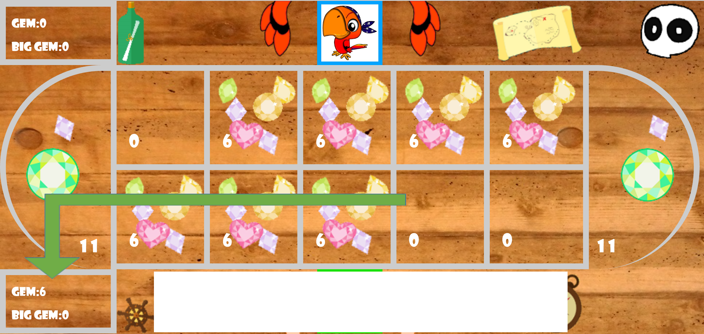

Tutorial
Gameboard
At first you need to understand how the gameboard work!

In this picture:
- The green part is represent for your field, and you have 5 gem on each cell when you start the game. In your field, you can select any cell to make a movement.
- The yellow part is represent for the master cell. In this master cell, there is a big gem which equals to 10 small gem, and both you and your opponent can't choose this cell to make a movement.
- The red part is represent for the opponent field. Only the opponent can use the cells on this field, and it also has 5 gem on each cell at the start point.
Movement
How to make a movement?

First, you need to choose a cell from your field (your field is the green part).

In here, I will choose the cell (the faded cell) that next to the right master cell.
When you select it, there are 2 arrow will display, and you will need to choose a direction that match with the arrow sign.

In here, I click the left arrow. Then:
- I pick up the gem on the chosen cell (now I'm holding 5 gems in my hand), so that cell will not has any gem inside.
- Then I take 1 gem from the holding gems and put it to the next cell (in the left direction), so now I have 4 gems left in my hand.
Then I continue to put down 1 gem on the next cell (now I have 3 gems left in my hand).
Keep doing that...(now I have 2 gems left in my hand)
Keep doing that...(now I only have 1 gems left in my hand)
In this situation, I'm not holding any gem in my hand anymore. Therefore, I stop to check for the next box of the last landed cell (the green cell).
If the next cell:
- is a master cell, I have to stop my turn and change to the opponent turn.
- is not a master cell, and it's not empty. I pick up the gem in the cell (the gem in the green cell) and keep spreading until I have no gem in my hand anymore. Then I will need to continue to check the next cell.
- is not a master cell, and it's empty. If the next cell of the empty cell isn't empty, you can get the gem(s) in that cell and store in your score box. Then you can check the next cell of the cell you just get the gem. If it are 2 continue empty cell, you will have to end your turn. If there next cell is empty, and the next 2 cell is not empty you will have a combo.
- is not a master cell, but it's' empty, and the next cell of it is also an empty cell. Therefore, you will have to end your turn.
In here, the next cell is not a master cell, and it's' also not an empty cel. Therefore, we pick up the gem in it (5 gems) and continue to spread (now I'm holding 4 gems).
Speading.....(now I'm holding 3 gems on your hand).

Speading.....(now I'm holding 2 gems on your hand).

Speading.....(now I'm holding 1 gems on your hand).

Speading.....now I'm holding 0 gems on your hand. Therefore, I will check the next cell (green cell) of the cell that I just put the gem from my hand.
Because the green cell is empty, and the next cell of it is not empty, I can get the gems on that cell(the cell which is next to the green cell) and put in my score box.
Then I check the next cell of the cell that I just get the gem inside. Because it's not empty, I have to end my turn here.
Combo
Win
You win the game when:
- You have more than 39 gems on your score box (1 big gem is equal to 10 gems).
- After your turn, the opponent's field is empty.